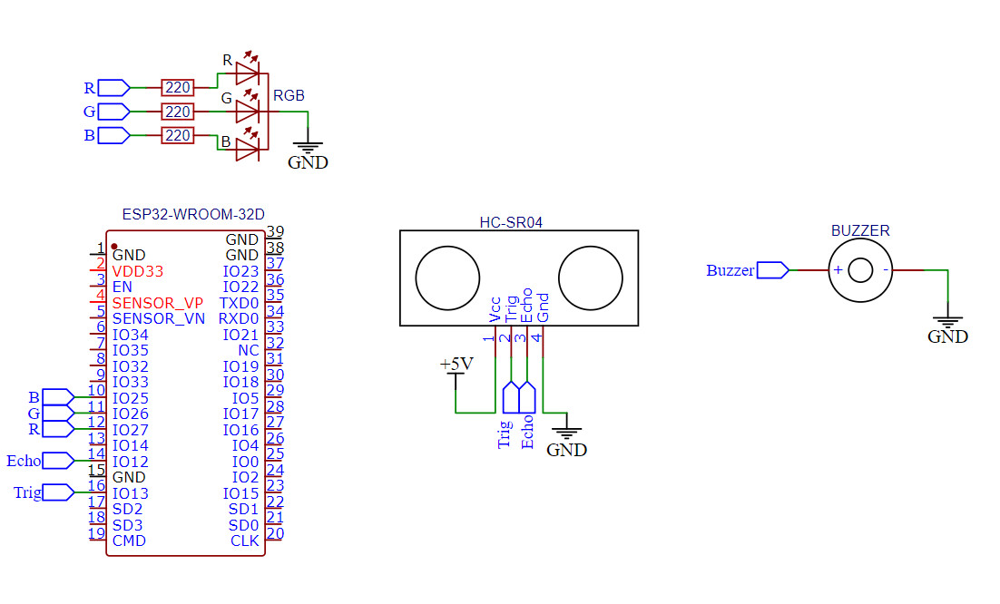

Mục Tiêu Của Đồ Án
Thiết kế được hệ thống thông báo ngập lụt ở 1 số tuyến đường trên địa bàn thành phố và đưa ra cho người dân phòng tránh.
Giới Thiệu Sơ Lược Về Phần Cứng Của Hệ Thống Cảnh Báo


Thiết kế được hệ thống thông báo ngập lụt ở 1 số tuyến đường trên địa bàn thành phố và đưa ra cho người dân phòng tránh.
Mục Đích Thực Hiện
Do hiện nay tình hình triều cường dâng cao khiến nhiều tuyến đường trọng yếu trên địa bàn khu vực Cần Thơ và các tuyến đường trọng yếu trên cả nước đều bị ngập lụt khiến việc đi lại khó khăn và việc biết trước phòng tránh khó khăn. Do nắm bắt được tâm lý và nhu cầu của mọi người nên nhóm em đã thiết kế ra hệ thống giám sát và cảnh báo khi có ngập cục bộ, từ đó người dân có thể chủ động được trong việc lựa chọn tuyến đường di chuyển phù hợp để phòng tránh lũ lụt mực nước dâng cao khi triều cường.